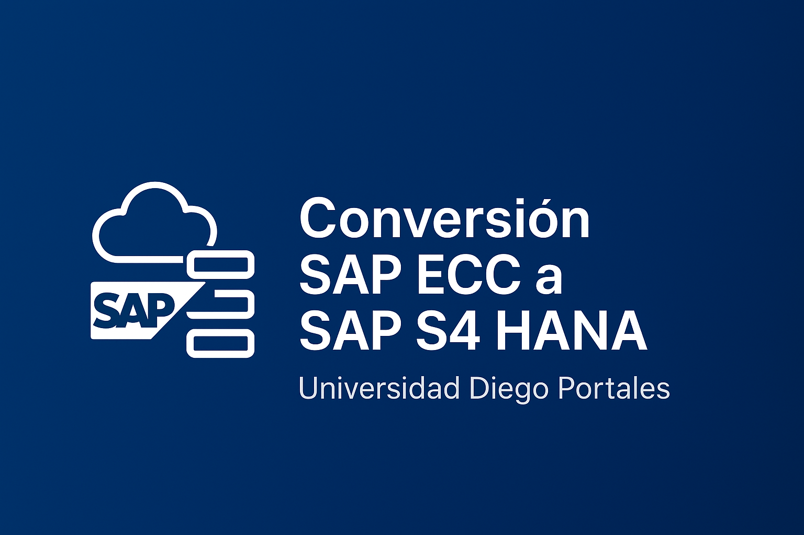

Conversión SAP ECC a SAP S4 HANA RISE
Contexto y Caso de Negocio
Como parte de su plan estrategico 2025, la Universidad Diego Portales planeaba migrar su plataforma SAP ECC a SAP S4 HANA RISE. El proyecto requirió un liderazgo sólido y la coordinación de múltiples áreas funcionales.
Mi Rol
Como Gerente de Proyecto, lideré la ejecución de la conversión, gestionando un equipo compuesto por 17 usuarios clave, 3 jefes de proyecto, los jefes de proyectos y consultores de 4 empresas proveedoras y más de 50 usuarios finales quienes partcipamos directa y activamente en el proyecto.
La Universidad Diego Portales UDP cuenta con una comunidad estudiantil de más de 19 mil personas, de las cuales aproximadamente 17 mil corresponden a estudiantes de pregrado y más de 2 mil a estudiantes de postgrado, todos usuarios directos de la vertical LMS de SAP.
Adicionalmente, existen alrededor de 2 mil usuarios pertenecientes a las áreas de Dirección, Gestión y Unidades administrativas, quienes utilizan los servicios de módulos tales como FI, Compras, Recursos Humanos y FICA.
Se aplicaron metodologías ágiles para la gestión de entregables y control de riesgos, así como SAP Activate para la gestión general del proyecto. El plan incluyó capacitación, pruebas integrales y gestión del cambio.Resultados
La conversión y migración se completó en tiempo y forma, asegurando la adopción exitosa de SAP S4 HANA RISE. Esto permitió cumplir el requerimiento tecnologico que el plan estrategico 2025 demanandaba, dejando a la institución preparada para el futuro digital mediante un kit de nuevas capacidades, todas potenciadas por la IA e incorporadas nativamente por SAP, en ésta su ultima versión del ERP.